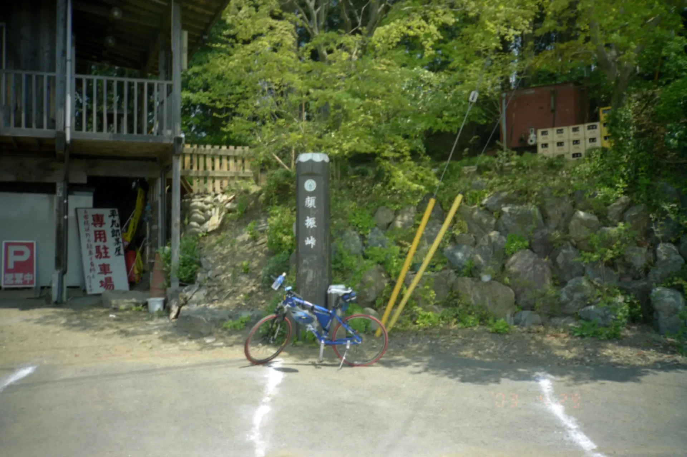
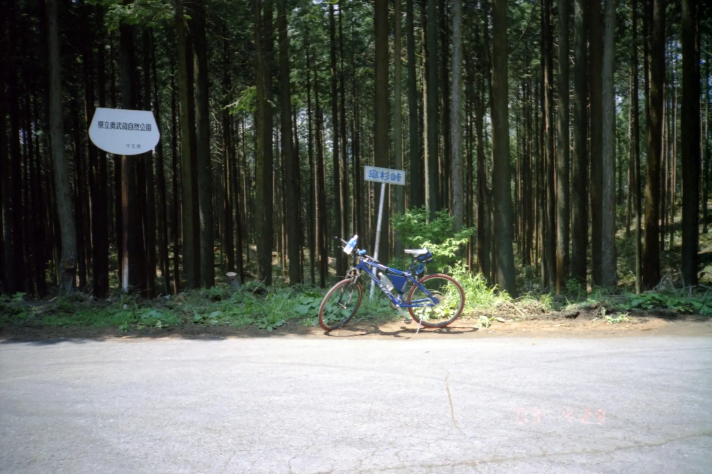
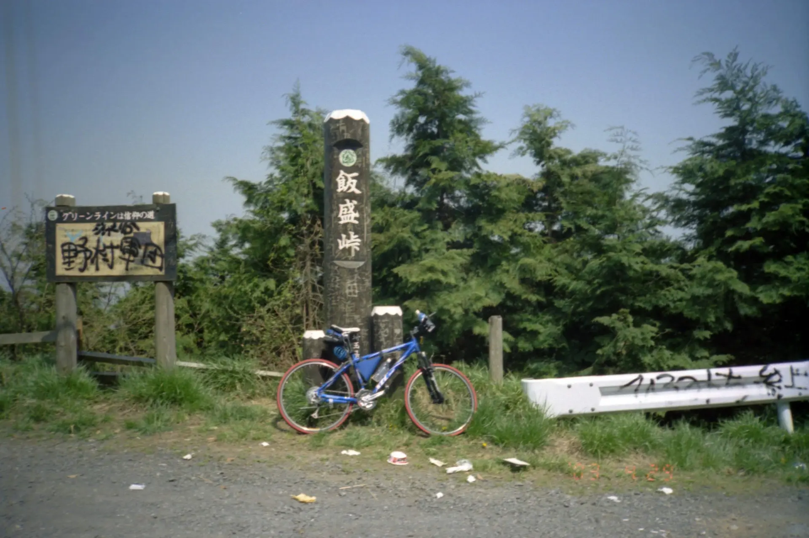
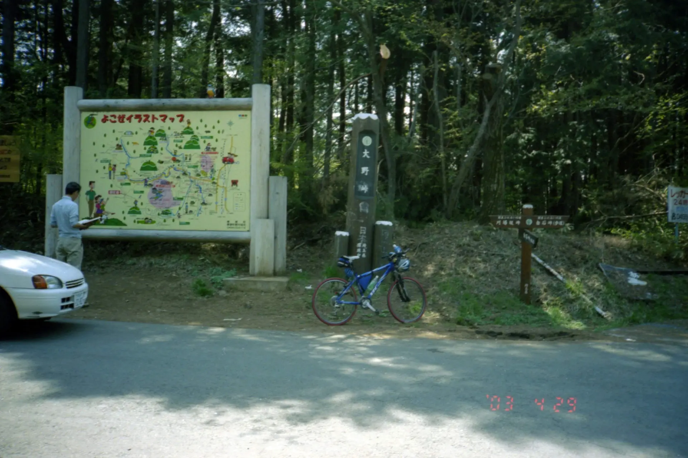
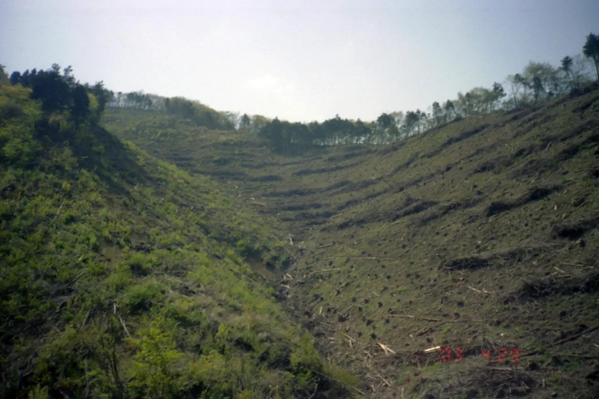
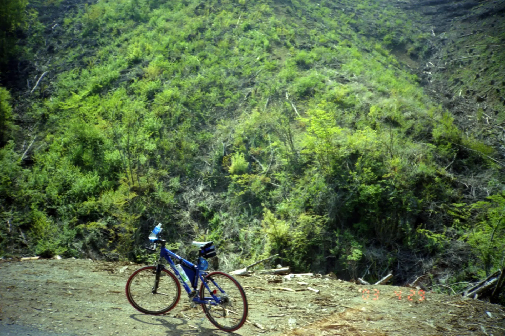
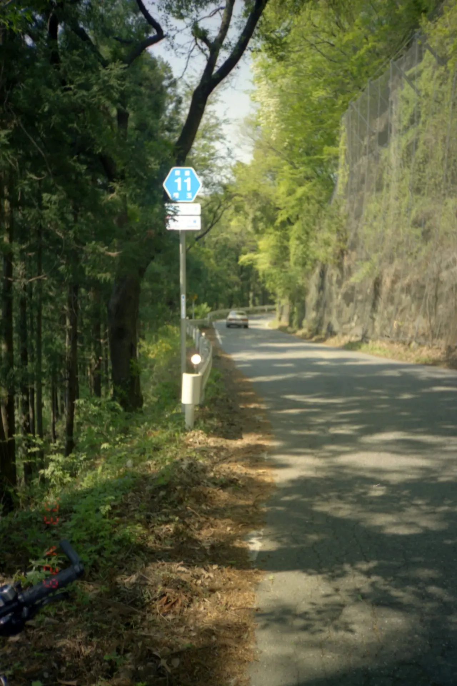
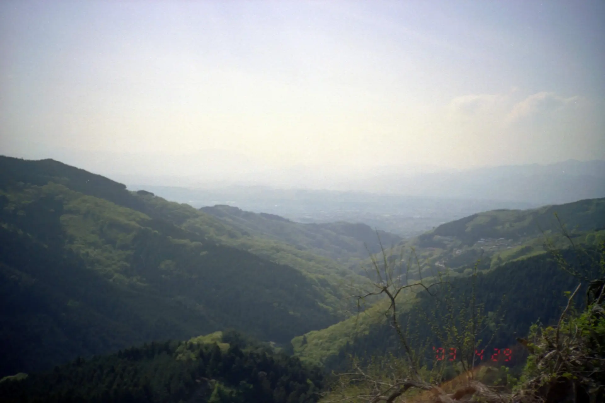
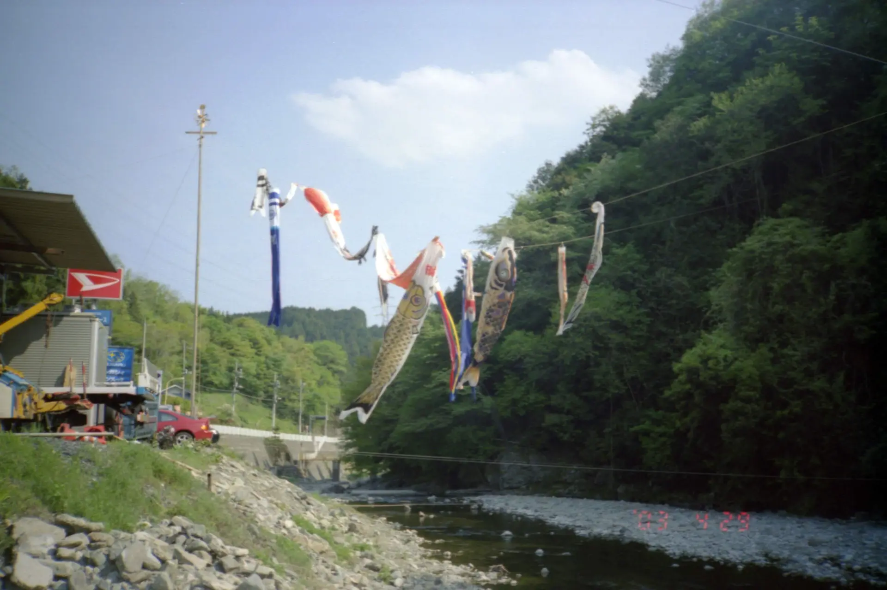
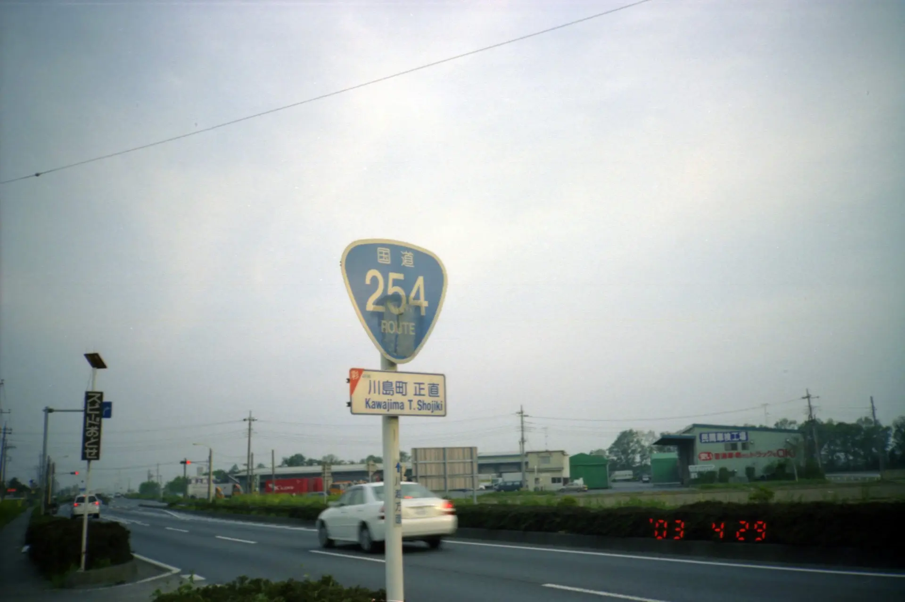

2003年4月29日 奥武蔵グリーンライン
2003年、スポーツ自転車（GIANT XtC840）を親に買ってもらって最初に行ったロングツーリング（もしかするとその前にさいたま市から利根大堰に見沼代用水沿いに行ったかもしれない）。
当時のインターネット個人サイトでは廃墟や廃道の探索趣味が流行っていた。確か自分は「裏ニュース」もしくは後継サイトの「連邦」（外部リンク）で、当時の大手サイトのひとつ「廃墟Explorer」（外部リンク）あたりが紹介されているのを見て興味を持った。ただ、廃墟よりも廃道に、そしてその流れで自転車旅行へと興味がスライドしていったのだった。当時の個人サイトで現役で更新しているのは、いまでは大御所の「山さいがねが」（外部リンク）くらいだ。
このツーリングは、さいたま市の実家から川越線沿いに飯能→奥武蔵グリーンライン→定峰峠→国道254経由で帰宅という流れ。
コンパクトフィルムカメラで撮影。機種は小学生1年生の頃に親に買ってもらった、RICOH LX-55Wという固定焦点カメラ。
奥武蔵グリーンライン
   フィルムのスキャン順の都合で入れ替わっている可能性があるのだが、たしか、白石峠から一度下る途中で木が伐採されていたので撮影した写真。
 定峰峠へ
これは定峰峠へ上り返している途中の写真。埼玉県道11号。
この見晴らしのよい場所はどこか不明。定峰から下る途中なのだろうか？もしかするとフィルムのスキャン順が入れ替わっていて、刈場坂峠からの景色かもしれない。
定峰峠を下って帰宅
ゴールデンウィークということでこいのぼりが出ていた。これは東秩父村で撮影。
国道254号、川島町正直。たしか地名が面白かったので撮影。
その後は秩父方面へ行くときは途中まで輪行することが多くなってしまったので、よくやったものだと思う。全自走はすごい。
奥武蔵グリーンラインというと一番気軽な東京近郊のサイクリングコースという感じだったが、自分は2009年くらいが最後で全然行かなくなってしまった。その後、台風などで崩落してズタズタになったり復旧したりを繰り返しているようだ。調べると、広河原逆川林道などはもう通り抜けが不可能らしいし、かつての林道ツーリングやパスハンティングというのは遠い昔のものになってしまったのを感じる。
この頃は、「ORRの道路報告書」（外部リンク）を見て、できるだけたくさんの峠を上ることを楽しみにしていた。
2025年12月13日記事公開